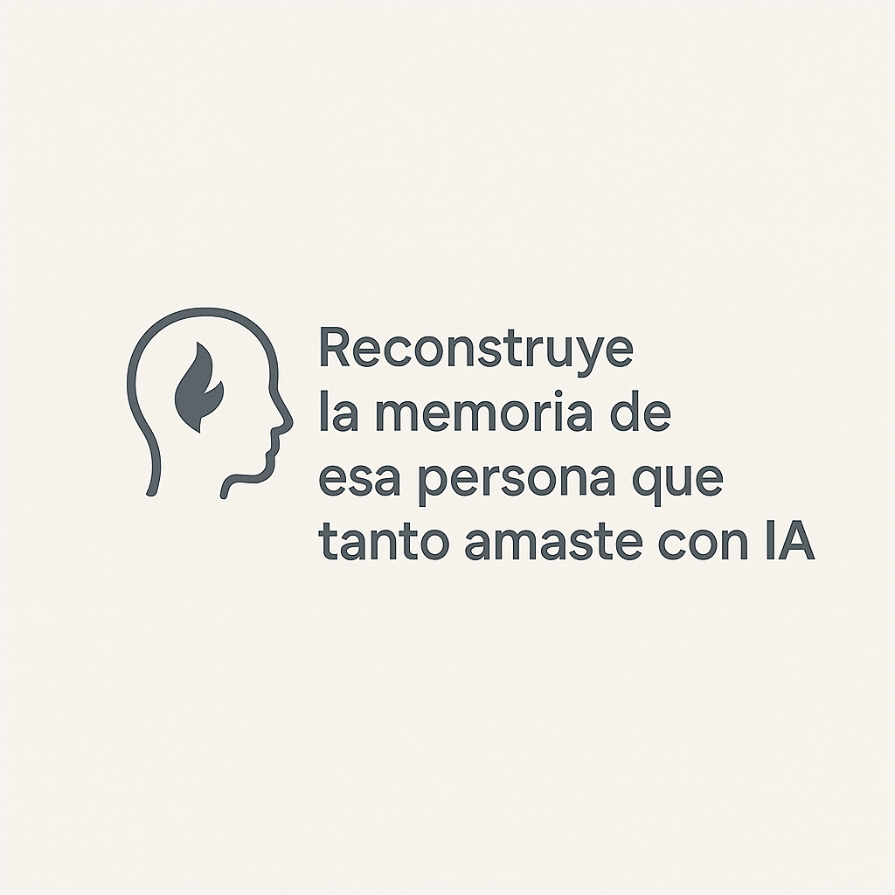

<!DOCTYPE html>
<html lang="en">
<head>
    <meta charset="UTF-8">
    <meta name="viewport" content="width=device-width, initial-scale=1.0">
    <link rel="shortcut icon" type="image/x-icon" href="./assets/favicon/echosoul1.png">
    <title>EchoSoul</title>
    <link rel="stylesheet" href="./css/style.css">
    <link rel="stylesheet" href="./css/letters.css">
    
</head>
<style></style>
<body>
    
</body>
</html>

<nav class="navbar">
  <div class="logo"></div>

  <div class="nav-links">
    <a href="#" class="active">Inicio</a>
    <a href="#diferentes">Diferentes</a>
    <a href="#beneficios">Beneficios</a>
    <a href="#funcionamiento">Funcionamiento</a>
    <a href="#privacidad">Privacidad y ética</a>
  </div>

  <button class="contact-btn">Contáctanos</button>

  <button class="mobile-menu-btn">
    <span></span>
    <span></span>
    <span></span>
  </button>
</nav>

<div class="mobile-menu">
  <a href="#" class="active">Inicio</a>
  <a href="#diferentes">Diferentes</a>

    <a href="#beneficios">Beneficios</a>
    <a href="#funcionamiento">Funcionamiento</a>
    <a href="#privacidad">Privacidad y ética</a>
  <button class="contact-btn">Contáctanos</button>
</div>

<main class="hero">
  <div class="hero-content">
  <h1 class="letters">
    <span class="type"></span>
    
  </h1>
  
</div>

  <div class="hero-image">
    <div class="circular-image">
      
    </div>
  </div>
</main>
<section class="problema-section">
  <div class="container">
    <h2 class="titulo">El vacío emocional tras la pérdida</h2>
    <p class="descripcion">
      Cuando perdemos a alguien que amamos, no solo se va su presencia física, también desaparece su voz, sus pensamientos y esa conexión única que compartíamos.
      <span class="bloque">EchoSoul nace para aliviar ese vacío, permitiéndote reconstruir y preservar la esencia de esa persona mediante inteligencia artificial.</span>
      <span class="bloque enfasis">Más que un recuerdo: una forma de seguir conectados.</span>
    </p>
    <div class="boton-contenedor">
      <button class="boton">Conoce cómo funciona</button>
    </div>
  </div>
</section>

<section class="difference-section" id="diferentes">
  <div class="features-header">
    <span class="features-label">echoSoul es único</span>
    <h2 class="features-title">
      ¿QUÉ NOS HACE DIFERENTES?
    </h2>
  </div>

  <div class="carousel">
    <div class="carousel-track">
      <div class="carousel-item">
        <div class="circle orange">
          <div class="icon wavy"></div>
        </div>
        <div class="description">
          
          <h2>Conexión emocional real</h2>
          <p>Reproduce mensajes y voces que despiertan memorias profundas con respeto y sensibilidad.</p>
        </div>
        <div class="circle yellow">
          <svg viewBox="0 0 24 24" class="icon">
            <path d="M12 3l4 7h-8l4-7z"></path>
            <path d="M12 21l-4-7h8l-4 7z"></path>
          </svg>
        </div>
      </div>
      <div class="carousel-item">
        <div class="circle yellow">
          <div class="icon star"></div>
        </div>
        <div class="description">
          <h2>Voces que susurran desde el recuerdo</h2>
          <p>Nuestra IA recrea patrones de voz únicos para que sientas cercanía como nunca antes.</p>
        </div>
        <div class="circle red">
          <div class="feature-icon red">
            <svg viewBox="0 0 24 24" class="icon">
              <path d="M3 6c2 0 4 2 6 2s4-2 6-2 4 2 6 2"></path>
              <path d="M3 12c2 0 4 2 6 2s4-2 6-2 4 2 6 2"></path>
              <path d="M3 18c2 0 4 2 6 2s4-2 6-2 4 2 6 2"></path>
            </svg>
          </div>
        </div>
      </div>
      <div class="carousel-item">
        <div class="circle orange">
          <div class="icon wavy"></div>
        </div>
        <div class="description">
          <h2>Un diseño hecho para el alma!</h2>
          <p>Cada interacción ha sido creada para brindar serenidad, calma y profundidad emocional.</p>
        </div>
        <div class="circle yellow">
          <svg viewBox="0 0 24 24" class="icon">
            <path d="M12 3l4 7h-8l4-7z"></path>
            <path d="M12 21l-4-7h8l-4 7z"></path>
          </svg>
        </div>
      </div>
      <div class="carousel-item">
        <div class="circle yellow">
          <div class="icon star"></div>
        </div>
        <div class="description">
          <h2>Tecnología con propósito humano</h2>
          <p>Fusionamos inteligencia artificial y empatía para mantener vivos los lazos más importantes.</p>
        </div>
        <div class="circle red">
          <div class="feature-icon red">
            <svg viewBox="0 0 24 24" class="icon">
              <path d="M3 6c2 0 4 2 6 2s4-2 6-2 4 2 6 2"></path>
              <path d="M3 12c2 0 4 2 6 2s4-2 6-2 4 2 6 2"></path>
              <path d="M3 18c2 0 4 2 6 2s4-2 6-2 4 2 6 2"></path>
            </svg>
          </div>
        </div>
      </div>
    </div>
  </div>
  <div class="navigation">
    <button class="nav-btn prev">&larr;</button>
    <button class="nav-btn next">&rarr;</button>
  </div>
</section>
<section class="constr-services" id="beneficios">
  <div class="features-header">
    <span class="features-label">¿POR QUÉ ECHOSOUL?</span>
    <h2 class="features-title">
      Nuestros beneficios
    </h2>
  </div>

  <div class="constr-grid">
    <div class="constr-card">
      <div class="constr-blob constr-blob-1"></div>
      <div class="constr-content">
        
        <h3>Conexión emocional duradera</h3>
        <p>Reconstruye puentes emocionales con tus seres queridos fallecidos a través de mensajes o llamadas que capturan su esencia, voz y estilo.</p>
      </div>
    </div>

    <div class="constr-card">
      <div class="constr-blob constr-blob-2"></div>
      <div class="constr-content">
        
        <h3>Apoyo en el duelo</h3>
        <p>Brinda consuelo y acompañamiento en momentos difíciles, ayudando a procesar el duelo de forma íntima y personalizada.</p>
      </div>
    </div>

    <div class="constr-card">
      <div class="constr-blob constr-blob-3"></div>
      <div class="constr-content">
        
        <h3>Preservación de memorias</h3>
        <p>Guarda y revive momentos únicos. EchoSoul conserva voces, palabras y emociones para que nunca se pierdan en el tiempo.</p>
      </div>
    </div>
  </div>
</section>
<section class="funcionamiento" id="funcionamiento">
  <div class="features-header">
    <span class="features-label">aprende a usar echosoul</span>
    <h2 class="features-title">
      ¿Cómo funciona EchoSoul?
    </h2>
  </div>
  <div class="hero-section">
    <div class="hero-container">
      <div class="hero-slide active responsive-wrapper">
        <div class="one">
          <div class="oneImg">

          </div>
          <div class="oneTxt">
            <h2>1<br/> Crea tu Soul</h2>
          
          </div>
        </div>
        <div class="two">
          <div class="twoImg">

          </div>
          <div class="twoTxt">
            <h2>2<br />
              Sube interacciones en redes, mensajes o audios reales</h2>
            
          </div>
        </div>
        <div class="three">
          <div class="threeImg">
          </div>
          <div class="threeTxt">
            <h2>3<br />
              La IA reconstruye su estilo y voz</h2>
            
          </div>
          
        </div>
        <div class="four">
          <div class="fourImg">

          </div>
          <div class="fourTxt">
            <h2>4<br />
              Recibe mensajes o llamadas cuando lo necesites</h2>
            
          </div>
        </div>
      </div>
      
    </div>
    
  </div>
</section>
<section class="info-section" id="privacidad">
  <div class="info-header">
    <div class="background-shape"></div>
    <h2>Privacidad y ética</h2>
    <p>Generamos confianza</p>
  </div>
  <div class="info-stats">
    <div class="stat">
      
      <p>En EchoSoul, tratamos cada memoria con el máximo respeto.</p>
    </div>
    <div class="stat">
     
      <p>Tus datos están cifrados y nunca compartimos contenido sin consentimiento.</p>
    </div>
    <div class="stat">
      <p>Porque los recuerdos no solo son valiosos... son sagrados.</p>
    </div>
  </div>
</section>
<footer class="footer">
  Made with by Espinoza Eche and Sánchez Castro
</footer>

<script src="./js/script.js"></script>
<script src="./js/letters.js"></script>